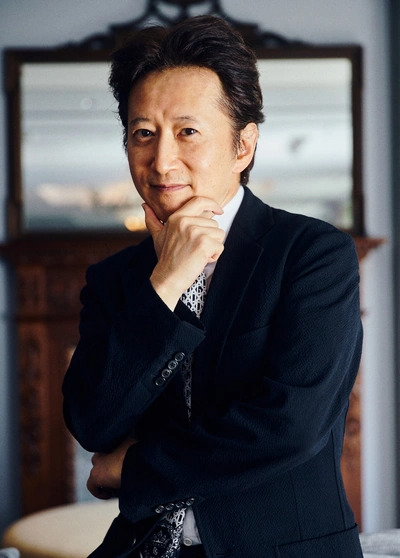

Hirohiko Araki
Criador de JoJo's Bizarre Adventure

Hirohiko Araki é um mangaká japonês nascido em 7 de junho de 1960 na cidade de Sendai, na província de Miyagi. Considerado um dos autores mais influentes da história dos mangás, Araki tornou-se mundialmente conhecido por criar JoJo's Bizarre Adventure, uma das séries mais populares e duradouras da indústria.
Seu interesse pela arte surgiu ainda na infância, inspirado por quadrinhos, filmes e obras de arte ocidentais. Após participar de concursos para novos artistas, iniciou sua carreira profissional na década de 1980, publicando histórias curtas que chamaram a atenção da editora Shueisha.
Em 1987, Araki lançou JoJo's Bizarre Adventure. A obra rapidamente conquistou popularidade graças ao seu estilo artístico único, personagens memoráveis e batalhas criativas. Ao longo dos anos, a série foi dividida em diferentes partes, cada uma apresentando novos protagonistas, cenários e desafios.
Além dos mangás, Araki também é conhecido por sua forte influência da moda, da música e das artes plásticas. Seu traço evoluiu significativamente ao longo da carreira, tornando-se uma de suas características mais reconhecidas. Muitas de suas ilustrações foram expostas em museus e galerias no Japão e em outros países.
Atualmente, Hirohiko Araki continua trabalhando em novas histórias da franquia JoJo e é amplamente reconhecido como uma das figuras mais importantes da cultura pop japonesa.
O Legado de Araki
O impacto de Hirohiko Araki ultrapassa os limites de JoJo's Bizarre Adventure. Seu trabalho influenciou diversos artistas, autores de mangá, ilustradores e criadores de conteúdo ao redor do mundo.
As famosas poses dos personagens, as referências musicais e a liberdade criativa presente em suas histórias tornaram-se elementos marcantes da cultura pop, sendo reconhecidos até mesmo por pessoas que nunca tiveram contato direto com a obra.
Mais de três décadas após o lançamento da primeira parte de JoJo, Araki continua sendo uma referência para fãs e profissionais da indústria, consolidando seu nome entre os maiores mangakás de todos os tempos.